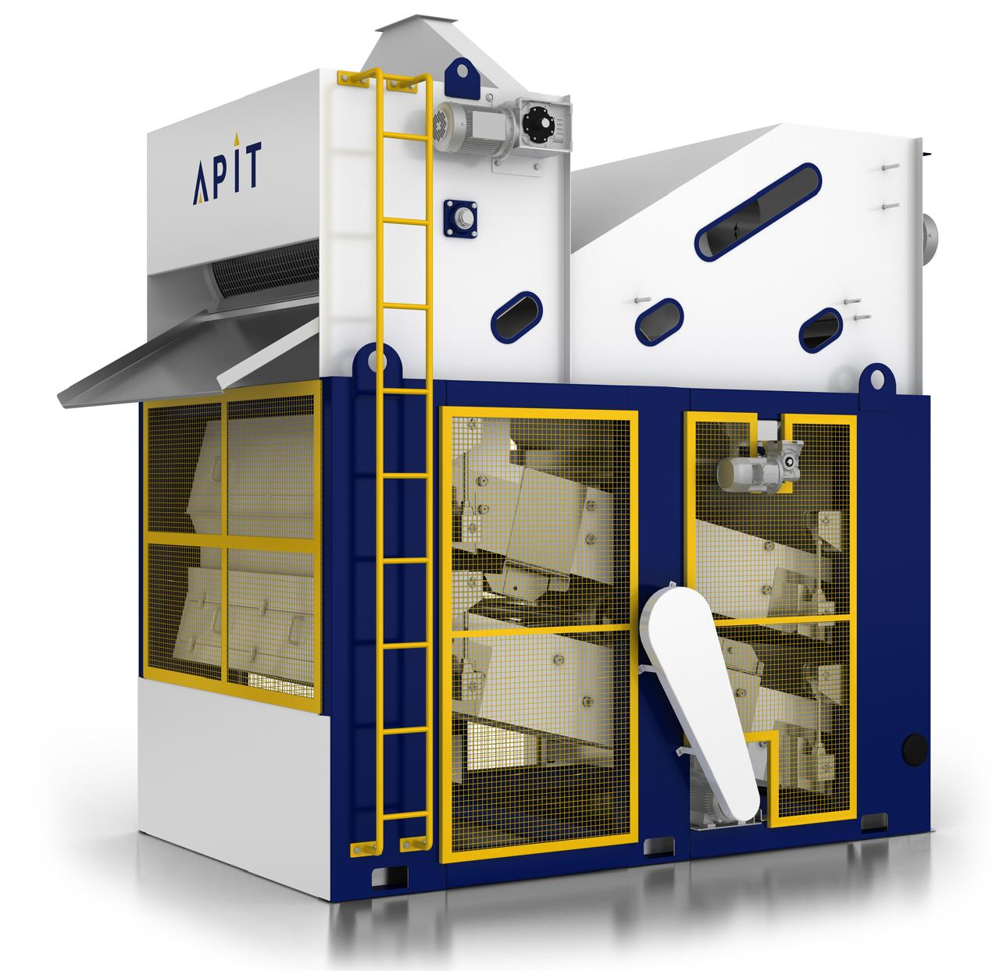

Grade every lot of paddy the moment it arrives at the mill gate — before it's accepted, priced, or moved into storage.
Paddy quality varies lot to lot, vehicle to vehicle, and season to season. Judging it by eye is inconsistent and slow. TMA takes a sample from an incoming lot, images every grain, and returns an objective quality breakdown in minutes — so procurement decisions are based on measured grain quality, not guesswork.

The share of sound, acceptable paddy grains in the sample.
Grains rejected on quality grounds — tracked as a clear percentage of the sample.
Husk, chaff, stones and broken grains isolated and quantified separately from good paddy.
Length, width and aspect ratio measured directly from the captured grain images.
Every sample is tagged with the paddy variety and season, so quality can be compared like-for-like.
Sample weight is recorded alongside every trial for consistent, repeatable comparisons.
TMA can run a quick hand-pounded control alongside a machine-milled pass on the same incoming sample, so you can see how a lot is likely to perform before committing it to the mill.
A manual-milling control result for the sample
The same sample, run through machine milling
Get a full quality read-out in minutes, while the vehicle is still at the gate.
Every batch is measured the same way, so results are directly comparable purchase to purchase.
Back purchase-price negotiation with objective quality data, not a visual estimate.
Project the sample result across the full procured lot, before it's even unloaded.
Use the predicted hand- and machine-milled outcome to decide the right processing route for each lot.
The operator enters the region, variety, and lot details for the incoming sample — guided step by step, with voice narration available in the operator's own language.
The sample is imaged grain by grain. TMA classifies each grain in real time as the trial runs.
Accepted / rejected / foreign-matter percentages, grain dimensions and a full trial-by-trial breakdown are ready immediately — and feed straight into Reports & Analytics for trend tracking over time.
Estimate the head rice and broken yield a lot will produce, before it's milled.
Spot poor-quality paddy well before it reaches the mill line.
Price every lot against measured quality, not a visual estimate.
Fewer poor-yielding purchases, protecting margin at the source.
Decide the right milling process for each lot based on its predicted outcome.
Track pricing across every co-product, not just the finished grain.
A full, connected record of what was paid, for what quality, lot by lot.
Know the likely split between head rice and brokens before you commit to a purchase.
From a single weighbridge to a multi-gate mill, TMA scales to how your paddy actually arrives.